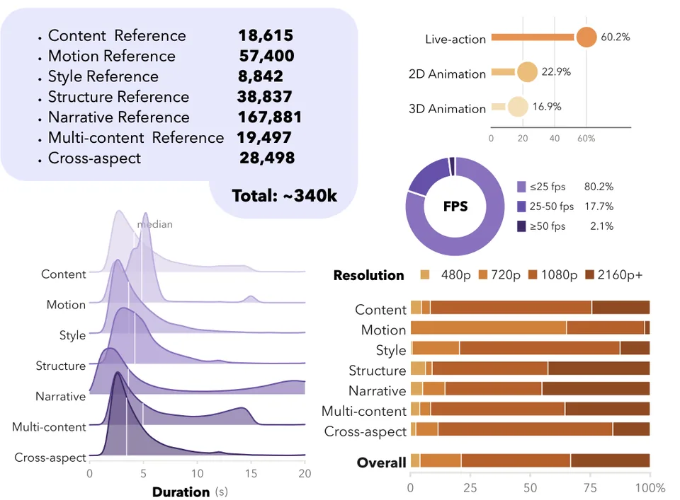
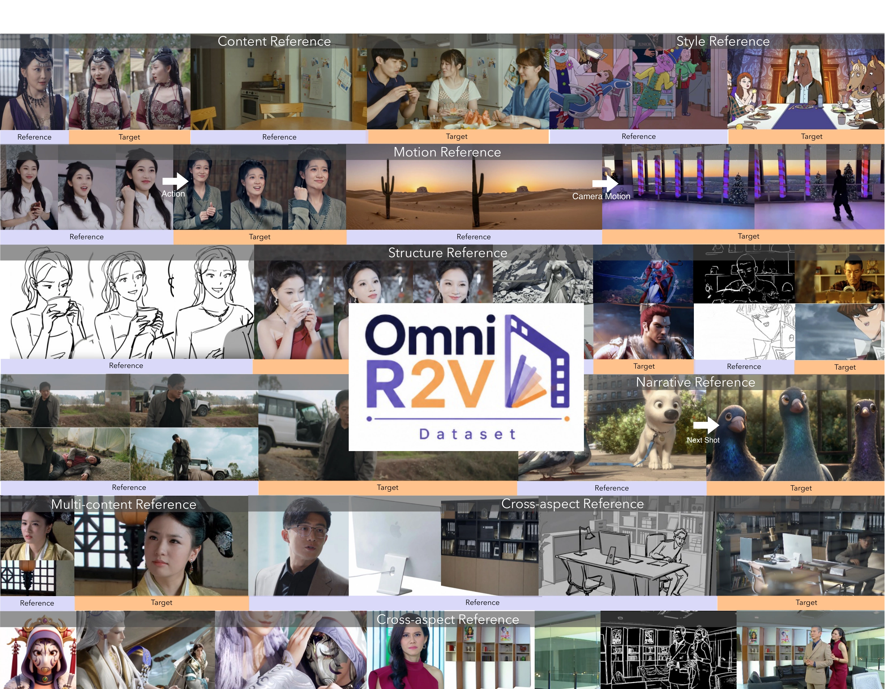

Task-specific pairing
Cross-pair matching finds references with the required identity or style relationship. Inverse construction derives task-relevant references from targets. Complementary roles are combined for multi-reference tasks.
OMNI-R2V / OMNIVBENCH
Dataset + benchmark for
omni reference-to-video generation
We introduce OmniVBench and the Omni-R2V Dataset, establishing a shared foundation for evaluating and training omni R2V models. The dataset provides processed reference–target pairs spanning diverse reference types and multi-reference compositions, with task-specific pipelines for pair construction and instruction generation.
| Dataset | # Size | Reference Modality | Reference Task Coverage | Processed Data Provided | |||||||
|---|---|---|---|---|---|---|---|---|---|---|---|
| Image | Video | Content | Motion | Style | Structure | Narrative | Multi-Content | Cross-Aspect | |||
| OpenS2V-5M | 5.4M | ✓ | ✓ | ✓ | ✓ | ||||||
| Phantom-Data | 1M | ✓ | ✓ | ✓ | |||||||
| MuSS | 30K | ✓ | ✓ | ||||||||
| Omni-R2V (Ours) | 340K | ✓ | ✓ | ✓ | ✓ | ✓ | ✓ | ✓ | ✓ | ✓ | ✓ |
Transcribed from the paper (Table 2). The local release candidate contains 339,570 samples (≈340K).


Cross-pair matching finds references with the required identity or style relationship. Inverse construction derives task-relevant references from targets. Complementary roles are combined for multi-reference tasks.
References and targets are captioned separately, then task-specific rules form instructions that identify each reference and its intended entity or visual factor.
Image and video conditions are drawn from live-action footage as well as 2D and 3D animation, so each reference family spans more than one visual domain.
Current package statistics shown above.
Inspect how an image or video reference conditions the target through content, motion, style, structure or narrative. Each example below contains one reference asset.
One target can be conditioned on several reference groups. Inspect the original input roles, multiple reference candidates, and the target video together.